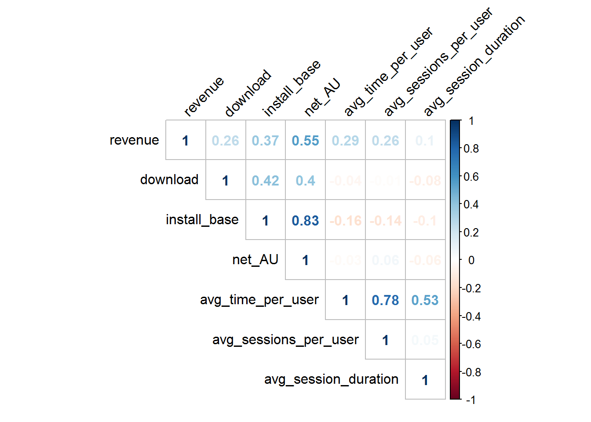
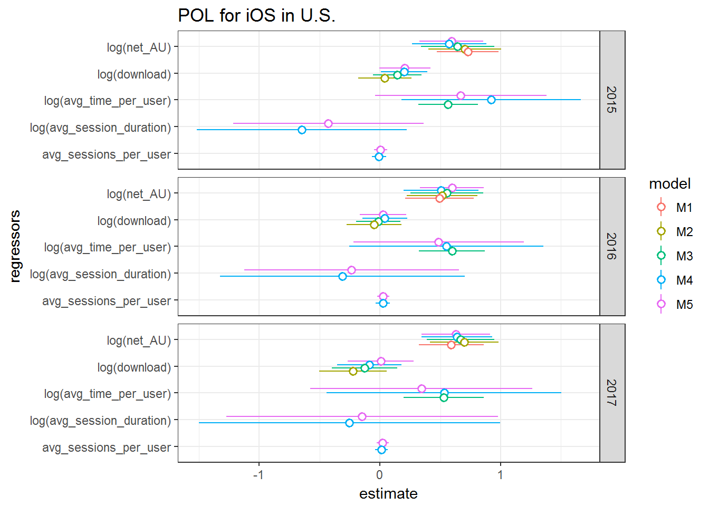
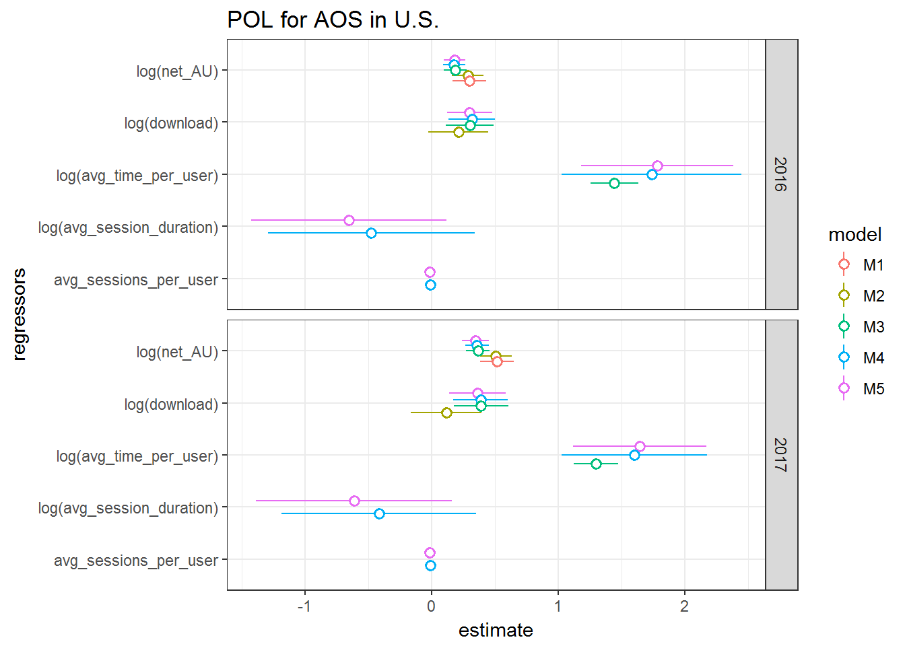
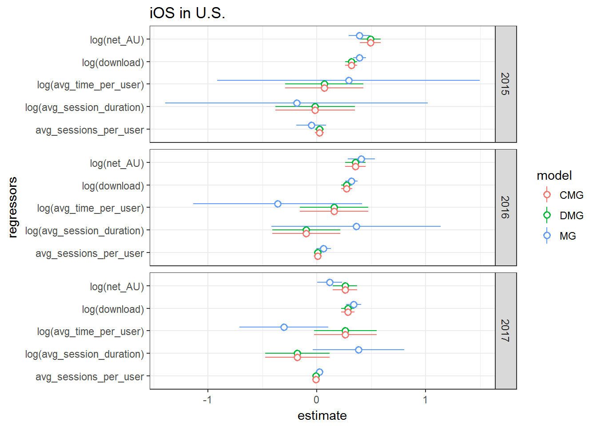
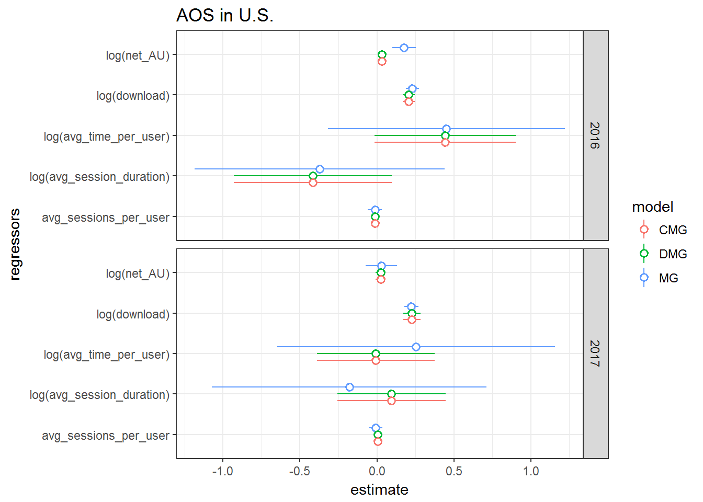

tl; dr
- 미국 iOS와 AOS(안드로이드) 모바일 게임 마켓 자료로 매출 신장에 기여하는 요인을 들여다보았다.
- 업계의 정설과는 다르게 활성 이용자(active users)의 매출 영향력은 크지 않다.
- 대개의 패널 기법들이 short panel에 기반하고 있어서 시간축이 좀 되는 녀석들을 다루는 데 애로사항이 있더라… (이거슨 능력부족)
Motivation
보통 어떤 연구 동기가 작용해서 이에 따라 문제를 잘 다듬어 문제를 살펴보는 게 보통의 순서다. 하지만 데이터를 구하기 어려운 영역에서는 반대의 경우가 더 많다. 데이터를 먼저 허겁지겁 찾고 혹은 구하고, 그 위에서 문제를 (짜?) 맞춘다. 물론 이런 접근의 한계는 분명하다. 하지만 역시 안하거나 못하는 것보다는 뭐라도 해보는 게 낫지 않나, 라고 스스로를 위로해본다.
모바일 게임 관련 데이터를 제공하는 AOO 사의 데이터를 이리저리 뒤지다가 재미있는 데이터를 보게 되었다. AOO 사가 주간 단위로 여간해서는 구하기 힘든 자료를 광범위한 게임에 대해 제공하고 있었다. 추정치이긴 하나 같은 방법론에 따라서 연속적으로 수집되었다는 점에서 그나마 일관성과 신뢰성이 있다고 하겠다. 모바일 게임 별로 다운로드 수, 활성이용자(active users) 수, 설치율, 총 이용시간, 설치 수 대비 활성화 율, 이용 세션 수(평균), 세션 지속시간(평균) 등 제공하고 있었다.[^metrics] 이 숫자들을 보고 있으려니 이런 생각이 떠오르더라.
저 변수들이 있으면 대략 업계의 몇 가지 속설들을 ’검증’할 있겠다. AOO 데이터의 매출 데이터 및 몇가지 다른 메타 데이터와 연결할 수 있겠네… 음. 주 단위 패널 데이터로 만들 수 있겠네…
여기까지 왔으면 일단 한번 달려봐야하지 않겠는가! (가즈아~) 일단 문서 작성에 의의를 두어 세부적인 참고문헌 등등은 생략했다. 양해 바란다.
Basic
데이터는 2015, 2016, 2017년 3개 연도를 대상으로 한다. 일단 미국 iOS, AOS의 데이터를 열심히 모았다. 데이터를 긁는게 좀 짜증이 나긴 했다. 같은 짜증을 한번 더 견디면, 한국의 두 플랫폼에 대해서도 아래와 같은 분석이 가능하다. 먼저 데이터 크기나 패널 데이터로서의 구색은 그리 나쁘지 않다. iOS의 경우에는 2015, 2016, 2017년이 다 있었고, AOS의 경우는 집계상의 어려움이 있었는지 2016, 2017년 자료를 모아 정리할 수 있었다. 자료의 현황은 아래와 같다.
## # A tibble: 5 x 3
## cat_platform year n_app
## <chr> <dbl> <dbl>
## 1 us_AOS 2016 123
## 2 us_AOS 2017 115
## 3 us_iOS 2015 124
## 4 us_iOS 2016 129
## 5 us_iOS 2017 106위의 표에서 눈치챈 사람도 있겠지만, 좀 더 엄밀한 분석을 위해서 패널 데이터를 구축했고, 1년 52주 단위 데이터를 모두 갖춘 게임들만 걸러냈다. 불균형 패널(unbalanced panel)을 구축해 아쉬운 자료를 늘이는 것도 나쁘지 않다. 하지만 추정 결과에 큰 차이가 없음을 대략적으로 확인하고, 깔끔하고 원활한 추정 작업을 위해 먼저 균형 패널을 분석 대상으로 제한할 것이다.
이 패널 데이터의 경우 횡단면(cross section)의 규모는 꽤 애매하다. 대개 전형적인 미시 자료의 경우 1,000 단위를 넘는 횡단면 규모를 지니고 있다. 반면, 시계열의 크기는 연도별로 52개 씩이다. 횡단면이 시게열보다는 길지만 그래도 시게열의 길이가 전형적인 패널 데이터에 비해서 짧지는 않기 때문에 추정 작업에 주의가 요구된다.
주요 변수설명
분석에 동원될 관심 변수의 주요 통계량에 대해서 살펴보자. 변수가 많아 따로 별도의 html 페이지를 만들었다. 예상대로 다른 변수에 비해서 매출(revenue), 다운로드(download) 등은 분포는 쏠림이 뚜렷하다.
Correlation
주요 설명변수로 활용할 변수들의 상관계수를 골라 시각화했다. 변수 해설은 아래 regressor에 대한 설명을 참고해주시면 되겠다.

분석에서 종속변수가 될 매출revenue과 상관관계가 가장 높은 변수는 순활성사용자net_AU다. 순활성사용자와 상관관계가 높은 설치 규모install_base는 설명변수에서 제외하는 것이 좋겠다. 평균이용시간avg_time_per_user과 평균세션수avg_sessions_per_user도 서로 상관성이 높다. 하지만 대체로 크게 문제될 것이 없으므로 이 둘은 모두 독립변수에 넣도록 하겠다.1
Pooled OLS
패널 데이터 모형으로 넘어가기 전에 몸풀이 겸 통합최소자승법(Pooled OLS; POLS)를 돌려보도록 하자. POLS란 패널 데이터의 고유한 차원인 개체-시간 축을 허물어 모든 데이터를 그냥 개체로 보는 것이다. 물론, 시간 변수나 개체 변수를 더미 변수로 보고 통제할 수는 있겠지만 패널 데이터 만의 장점을 활용하는 분석을 버리는 추정법이다. 일단, 이 추정법의 옳고 그름을 떠나서 우리의 관심 사안이 무엇이고 어떤 형태인지를 파악 하는 정도의 의미를 부여하자.
Regressors
회귀분석에 동원된 설명변수들을 살펴보도록 하자.
Dissecting active users
앞서 말해듯 몇 개의 변수들이 있지만 사실상 동일한 지표인 경우가 있어서 회귀 변수 선택에 약간의 고민이 필요하다. 이 자료의 가장 좋은 점은 업계에서 가장 중요한 지표로 삼는 활성사용자의 규모를 둘로 쪼개서 볼 수 있게 해준다는 데 있다. 활성이용자란 해당 주 동안 해당 게임에 한번이라도 접속한 이용자다. 그리도 다행스럽게도 자료에는 주별로 발생한 신규 다운로드가 들어 있다. 이렇게 되면, 해당 주에 발생한 새로운 다운로드와 이외에 다운로드 없이 기존에 설치된 앱에서 들어온 이용자를 구별할 수 있다.2
download: 해당 주에 발생한 다운로드 규모net_AU:active_user-download. 즉, 해당 주 활성 이용자에서 다운로드 숫자를 뺀 순 활성 이용자 규모
Duration
활성이용자가 ‘어떻게’ 게임을 했는지에 대한 자료도 있다. 아쉽게도 자료는 활성이용자의 게임 이용시간의 평균값만 제공한다. 만일 해당 게임 이용자의 플레이 패턴에 대한 분포가 있다면 좋았을 것이다. 하지만 이가 없으면 잇몸으로 버텨야지. 이용자들의 게임이용 시간의 평균값을 플레이의 지속성을 나타내는 변수로 활용하도록 하자.
- ‘avg_time_per_user’: 인당 평균 이용 시간 (단위: 초)
Session
모바일 게임에서 세션이란 한번 접속해서 플레이를 지속하고 끝낼 때까지를 나타낸다. 세션에 대한 정보는 게임 별 평균 세션 횟수, 그리고 1회 세션의 지속 시간 두 가지 정보가 있다. 보통 모바일 게임의 경우 게임 디자인의 단계에서 세션을 굉장히 중요하게 취급하곤 한다. 과연 게임 세션의 특징은 매출 증감과 관련이 있을까?
- ‘avg_sessions_per_user’: 인당 평균 이용 세션 횟수
- ‘avg_session_duration’: 세션당 평균 이용 시간 (단위: 초)
History
모바일 게임이 매출을 발생시키는 주기는 길까 짧을까? 보통은 매우 짧다고 알고 있다. 이 문제를 어림잡기 위해서 게임 최초 출시 이후 각 시점에서 경과 연도를 더미 변수로 활용하도록 하겠다.
Controls
이외 통제 변수로 아래와 같은 더미 변수들을 활용했다.
- 부분 유료화(in-app purchase) 여부
- 프랜차이즈 게임 여부 (예를 들어, “캔디크러시사가” 시리즈의 파생 게임인지 여부)
- 퍼브리셔 소속 지역
- 연도, 월
물론, 통제 변수들 중에서 패널 추정 방법에 따라서 활용할 수 없는 변수들이 있음을 미리 밝혀둔다.
2015, 2016, 2017년 3개 년도와 iOS, AOS 두 개의 OS를 조합하고 자료가 없는 AOS의 2015년을 제외하면 모두 다섯 세트의 데이터가 분석의 대상이다. POLS의 분석 모형으로 아래 다섯 개의 회귀식을 적용한다. 표준 오차는 Stata에서 계산되는 클러스터 표준오차를 활용했다.
- Model 1:
log(revenue) ~ log(net_AU) - Model 2:
log(revenue) ~ log(download) + log(net_AU) - Model 3:
log(revenue) ~ log(download) + log(net_AU) + log(avg_time_per_user) - Model 4:
log(revenue) ~ log(download) + log(net_AU) + log(avg_time_per_user) + log(avg_session_duration) + avg_sessions_per_user - Model 5:
log(revenue) ~ log(download) + log(net_AU) + log(avg_time_per_user) + log(avg_session_duration) + avg_sessions_per_user + factor(month) + cat_iap + cat_franchise + cat_hqcountry + cat_history
추정결과 링크
각 모형의 추정 결과를 년도별과 OS별 시각화해 표현해보도록 하자.

일단 몇가지 지적해두고 가자.
- iOS와 AOS 모두 평균 플레이 시간의 매출 기여가 두드러진다. 특히 AOS에서는 1을 상회하는 계수치로 효과가 매우 높은 것으로 나타난다.
- 연도별로 다소 차이는 있지만, 두 플랫폼 모두 순활성이용자, 다운로드 역시 매출에 영향을 주고 있다. 대체로 순활성이용자의 기여도가 다운로드에 비해서는 강한 것으로 나타나고 있다.
- 세션의 평균 지속시간은 매출에 반대의 영향을 나타내고 있다.
- OS 내에서는 비교적 비슷한 형태의 효과를 관찰할 수 있으나, OS 사이에는 다소 뚜렷한 차이가 발견된다. AOS에서는 평균 이용시간의 영향력이 두드러지고, iOS에서는 순활성이용자의 효과가 가장 뚜렷한 것으로 관찰된다.
물론 이 모형은 POLS를 돌려본 것에 불과하다. 패널 모형을 통해 다른 추정 방법을 사용할 경우 어떻게 바뀔까?
Panel Models
패널 데이터란 횡단면(같은 시점에 존재하는 서로 다른 개체들의 차원)과 시계열(같은 개체들에 대한 서로 다른 시점의 차원)을 모두 갖춘 데이터다. 패널 데이터의 가치는 비교적 안정적으로 같은 개체들에 대한 데이터를 모아놓았다는 데 있다. 아래 식에서 \(i\)는 각 개체 즉 개별 게임을, \(t\)는 관찰 시점 즉 주(week)를 나타낸다. 종속 변수(dependent variable)는 게임의 주간 매출이다. 여기서는 로그값으로 사용하도록 한다.
\[ Y_{it} = \alpha + \beta^{'} X_{it} + u_{it}\]
분석할 패널 자료는 꽤 긴 시계열을 지니고 있다. 에러를 모델링 할 때 각 개체와 더불어 시점도 함께 고려하는 것이 좋겠다. 물론 경우에 따라서는 미봉책에 불과하다. 즉,
\[ u_{it} = \mu_i + \eta_t + \nu_{it} \]
우선 패널 데이터의 보편적인 분석 방법으로 자료를 돌려보기로 하겠다. 개체의 잠재 속성을 제거하기 위해 일차차분(first-difference; FD) 모형, 고정효과(fixed effect; FE) 모형과 임의효과(random effect; RE) 모형을 살펴볼 것이다. 이들 모형과의 비교를 위해서 시계열을 평균으로 없앤 뒤 개체의 차이만 보는 개체간 모형(between; BE), 그리고 횡단면이나 시계열의 차이를 무시하고 모두 같은 개체로 보고 OLS를 돌리는 통합 모형(pooled OLS; POLS) 제시할 예정이다.
일단 몸풀기 삼아서 위의 독립변수들로 몇가지 OLS를 돌려보도록 하자.
Estimation by OS and year
- 모형
- 고정효과 모형(Fixed effect model: FE)
- 랜덤효과 모형(Random effect model: RE)
- 이차차분 모형(First difference model: FD)
- Between 모형 (BE)
- Pooling 모형 (POLS)
- 패널 특성 반영
- 개체 특성만 반영(individual: ID)
- 개체와 시간 특성 모두 반영(twoways: TW)
통상적인 패널 추정방법을 가능한 경우 거의 모두 활용해서 6가지 방법으로 추정했다. BE 모형을 제외한 모든 모형은 Driscoll and Kraay(1998)의 robust covariance를 사용했다. 사실 아래 모델을 정당화하려면 몇가지 검정들을 통과해야 할 것이다. 사실 FE냐 RE냐, FE냐 POLS냐, 류의 검정은 항상 FE가 우월하게 나온다. 또한, 거의 모든 모델에서 계열 상관serial correlation 및 횡단면 상관cross-sectional correlation이 존재한다. 여러가지 방법을 모두 보고해야 되곘지만, 추정 결과에 차이가 없어 두 종류의 상관을 어느 정도 보정할 수 있는 방법을 활용해 아래 검정에 활용했다.
iOS 2015
| Dependent variable: | ||||||
| log(revenue) | log(revenue) | |||||
| panel | coefficient | panel | ||||
| linear | test | linear | ||||
| FE-TW | FE-ID | RE-ID | FD-ID | BT-ID | POLS-TW | |
| (1) | (2) | (3) | (4) | (5) | (6) | |
| log(download) | 0.305*** | 0.322*** | 0.322*** | 0.178*** | 0.128 | 0.207*** |
| (0.017) | (0.025) | (0.025) | (0.034) | (0.173) | (0.025) | |
| log(net_AU) | 0.720*** | 0.700*** | 0.694*** | 0.136* | 0.647*** | 0.592*** |
| (0.030) | (0.035) | (0.038) | (0.081) | (0.153) | (0.021) | |
| log(avg_time_per_user) | 0.130** | 0.134** | 0.140*** | 0.026 | 0.774** | 0.669*** |
| (0.055) | (0.054) | (0.046) | (0.045) | (0.377) | (0.026) | |
| log(avg_session_duration) | -0.195*** | -0.194*** | -0.198*** | 0.037 | -0.432 | -0.428*** |
| (0.055) | (0.054) | (0.045) | (0.050) | (0.416) | (0.040) | |
| avg_sessions_per_user | 0.013*** | 0.014*** | 0.015*** | 0.009** | -0.003 | 0.004* |
| (0.004) | (0.004) | (0.003) | (0.004) | (0.029) | (0.002) | |
| cat_iapY | 0.232 | 0.326 | 0.361*** | |||
| (1.022) | (0.796) | (0.033) | ||||
| cat_franchiseSpinoff | -0.551 | -0.581** | -0.558*** | |||
| (0.348) | (0.279) | (0.019) | ||||
| Constant | -1.207 | -1.739 | -1.421*** | |||
| (1.716) | (2.064) | (0.275) | ||||
| Observations | 6,396 | 6,396 | 6,396 | 123 | 6,396 | |
| R2 | 0.477 | 0.496 | 0.493 | 0.546 | 0.529 | |
| Adjusted R2 | 0.461 | 0.484 | 0.491 | 0.463 | 0.527 | |
| F Statistic | 514.159*** (df = 11; 6211) | 279.142*** (df = 22; 6251) | 206.650*** (df = 30; 6365) | 6.526*** (df = 19; 103) | 238.231*** (df = 30; 6365) | |
| Note: | *p<0.1; **p<0.05; ***p<0.01 | |||||
iOS 2016
| Dependent variable: | ||||||
| log(revenue) | log(revenue) | |||||
| panel | coefficient | panel | ||||
| linear | test | linear | ||||
| FE-TW | FE-ID | RE-ID | FD-ID | BT-ID | POLS-TW | |
| (1) | (2) | (3) | (4) | (5) | (6) | |
| log(download) | 0.300*** | 0.310*** | 0.309*** | 0.200*** | -0.162 | 0.026 |
| (0.025) | (0.027) | (0.026) | (0.026) | (0.183) | (0.018) | |
| log(net_AU) | 0.391*** | 0.388*** | 0.388*** | 0.040 | 0.711*** | 0.596*** |
| (0.129) | (0.128) | (0.127) | (0.025) | (0.160) | (0.034) | |
| log(avg_time_per_user) | 0.158** | 0.151** | 0.155*** | 0.147*** | 0.520 | 0.486*** |
| (0.065) | (0.064) | (0.058) | (0.026) | (0.387) | (0.045) | |
| log(avg_session_duration) | -0.045 | -0.034 | -0.037 | -0.124*** | -0.190 | -0.235*** |
| (0.085) | (0.084) | (0.080) | (0.038) | (0.464) | (0.032) | |
| avg_sessions_per_user | 0.006*** | 0.008*** | 0.008*** | 0.0002 | 0.025 | 0.026*** |
| (0.002) | (0.002) | (0.003) | (0.002) | (0.029) | (0.003) | |
| cat_iapY | 1.326 | 0.808 | 1.005*** | |||
| (1.962) | (1.267) | (0.061) | ||||
| cat_franchiseSpinoff | -0.508 | -0.766** | -0.685*** | |||
| (0.369) | (0.293) | (0.030) | ||||
| Constant | 0.521 | 0.594 | -0.021 | |||
| (2.035) | (2.704) | (0.372) | ||||
| Observations | 6,708 | 6,708 | 6,708 | 129 | 6,708 | |
| R2 | 0.355 | 0.376 | 0.373 | 0.428 | 0.396 | |
| Adjusted R2 | 0.336 | 0.362 | 0.370 | 0.316 | 0.393 | |
| F Statistic | 298.317*** (df = 12; 6516) | 171.865*** (df = 23; 6556) | 124.332*** (df = 32; 6675) | 3.818*** (df = 21; 107) | 136.703*** (df = 32; 6675) | |
| Note: | *p<0.1; **p<0.05; ***p<0.01 | |||||
iOS 2017
| Dependent variable: | ||||||
| log(revenue) | log(revenue) | |||||
| panel | coefficient | panel | ||||
| linear | test | linear | ||||
| FE-TW | FE-ID | RE-ID | FD-ID | BT-ID | POLS-TW | |
| (1) | (2) | (3) | (4) | (5) | (6) | |
| log(download) | 0.387*** | 0.400*** | 0.398*** | 0.305*** | -0.115 | 0.006 |
| (0.041) | (0.039) | (0.036) | (0.013) | (0.248) | (0.033) | |
| log(net_AU) | 0.333** | 0.322** | 0.323** | 0.032 | 0.739*** | 0.628*** |
| (0.142) | (0.135) | (0.138) | (0.025) | (0.202) | (0.047) | |
| log(avg_time_per_user) | 0.104*** | 0.106*** | 0.106*** | 0.046* | 0.356 | 0.343*** |
| (0.039) | (0.039) | (0.036) | (0.023) | (0.582) | (0.046) | |
| log(avg_session_duration) | 0.006 | 0.005 | 0.005 | -0.010 | -0.101 | -0.149** |
| (0.048) | (0.047) | (0.046) | (0.038) | (0.730) | (0.061) | |
| avg_sessions_per_user | -0.004 | -0.004 | -0.004 | -0.0005 | 0.023 | 0.023*** |
| (0.003) | (0.003) | (0.003) | (0.002) | (0.036) | (0.004) | |
| cat_iapY | 2.069 | 1.273 | 1.467*** | |||
| (2.546) | (1.432) | (0.079) | ||||
| cat_franchiseSpinoff | -0.185 | -0.525 | -0.452*** | |||
| (0.412) | (0.365) | (0.029) | ||||
| Constant | 0.142 | -1.277 | -0.533 | |||
| (3.197) | (3.303) | (0.657) | ||||
| Observations | 5,512 | 5,512 | 5,512 | 106 | 5,512 | |
| R2 | 0.357 | 0.381 | 0.378 | 0.389 | 0.339 | |
| Adjusted R2 | 0.336 | 0.366 | 0.374 | 0.227 | 0.335 | |
| F Statistic | 227.817*** (df = 13; 5342) | 138.060*** (df = 24; 5382) | 100.841*** (df = 33; 5478) | 2.399*** (df = 22; 83) | 85.153*** (df = 33; 5478) | |
| Note: | *p<0.1; **p<0.05; ***p<0.01 | |||||
AOS 2016
| Dependent variable: | ||||||
| log(revenue) | log(revenue) | |||||
| panel | coefficient | panel | ||||
| linear | test | linear | ||||
| FE-TW | FE-ID | RE-ID | FD-ID | BT-ID | POLS-TW | |
| (1) | (2) | (3) | (4) | (5) | (6) | |
| log(download) | 0.265*** | 0.273*** | 0.273*** | 0.120*** | 0.210* | 0.300*** |
| (0.026) | (0.030) | (0.028) | (0.030) | (0.110) | (0.017) | |
| log(net_AU) | 0.034*** | 0.031*** | 0.032*** | -0.004 | 0.253*** | 0.181*** |
| (0.008) | (0.009) | (0.008) | (0.002) | (0.062) | (0.016) | |
| log(avg_time_per_user) | 0.245*** | 0.241*** | 0.258*** | 0.070 | 2.022*** | 1.781*** |
| (0.039) | (0.039) | (0.040) | (0.046) | (0.551) | (0.048) | |
| log(avg_session_duration) | -0.159*** | -0.142*** | -0.142*** | -0.029 | -0.724 | -0.653*** |
| (0.047) | (0.048) | (0.054) | (0.044) | (0.654) | (0.060) | |
| avg_sessions_per_user | -0.001 | -0.0003 | -0.0003 | 0.001 | -0.024 | -0.016*** |
| (0.002) | (0.002) | (0.002) | (0.002) | (0.025) | (0.002) | |
| cat_iapY | 2.480 | 0.306 | 0.566*** | |||
| (2.304) | (1.015) | (0.079) | ||||
| cat_franchiseSpinoff | -0.742* | -0.569*** | -0.545*** | |||
| (0.421) | (0.216) | (0.036) | ||||
| Constant | 4.484** | -5.918*** | -5.606*** | |||
| (2.248) | (2.196) | (0.181) | ||||
| Observations | 6,344 | 6,344 | 6,344 | 122 | 6,344 | |
| R2 | 0.175 | 0.223 | 0.225 | 0.700 | 0.617 | |
| Adjusted R2 | 0.151 | 0.205 | 0.222 | 0.644 | 0.615 | |
| F Statistic | 131.136*** (df = 10; 6161) | 84.560*** (df = 21; 6201) | 61.196*** (df = 30; 6313) | 12.515*** (df = 19; 102) | 338.874*** (df = 30; 6313) | |
| Note: | *p<0.1; **p<0.05; ***p<0.01 | |||||
AOS 2017
| Dependent variable: | ||||||
| log(revenue) | log(revenue) | |||||
| panel | coefficient | panel | ||||
| linear | test | linear | ||||
| FE-TW | FE-ID | RE-ID | FD-ID | BT-ID | POLS-TW | |
| (1) | (2) | (3) | (4) | (5) | (6) | |
| log(download) | 0.394*** | 0.401*** | 0.400*** | 0.236*** | 0.377** | 0.362*** |
| (0.024) | (0.025) | (0.025) | (0.021) | (0.171) | (0.027) | |
| log(net_AU) | 0.053*** | 0.050*** | 0.052*** | 0.001 | 0.460*** | 0.346*** |
| (0.010) | (0.009) | (0.009) | (0.002) | (0.092) | (0.035) | |
| log(avg_time_per_user) | 0.117*** | 0.117*** | 0.128*** | -0.003 | 2.109*** | 1.643*** |
| (0.029) | (0.028) | (0.029) | (0.023) | (0.530) | (0.066) | |
| log(avg_session_duration) | -0.014 | -0.011 | -0.014 | 0.050* | -1.011 | -0.612*** |
| (0.042) | (0.040) | (0.044) | (0.028) | (0.619) | (0.101) | |
| avg_sessions_per_user | 0.005*** | 0.005*** | 0.005*** | 0.003*** | -0.025 | -0.013*** |
| (0.001) | (0.001) | (0.001) | (0.001) | (0.020) | (0.002) | |
| cat_iapY | 2.957 | 0.042 | 0.548*** | |||
| (2.356) | (1.106) | (0.100) | ||||
| cat_franchiseSpinoff | -0.101 | -0.392 | -0.324*** | |||
| (0.388) | (0.267) | (0.017) | ||||
| Constant | 3.261 | -10.914*** | -7.808*** | |||
| (2.180) | (2.889) | (0.624) | ||||
| Observations | 5,980 | 5,980 | 5,980 | 115 | 5,980 | |
| R2 | 0.254 | 0.278 | 0.278 | 0.680 | 0.597 | |
| Adjusted R2 | 0.231 | 0.261 | 0.274 | 0.612 | 0.595 | |
| F Statistic | 179.299*** (df = 11; 5803) | 102.150*** (df = 22; 5843) | 73.802*** (df = 31; 5948) | 9.988*** (df = 20; 94) | 284.219*** (df = 31; 5948) | |
| Note: | *p<0.1; **p<0.05; ***p<0.01 | |||||
몇가지 눈여겨 볼만한 차이를 살펴보자.
POLS vs Panel Models
- iOS의 POLS에서 다운로드 수의 영향력이 POLS에 비해 안정적으로 관찰된다.
- AOS의 POLS에서 평균 플레이시간의 강력한 영향력은 크게 줄어든다.
FE vs FD
거의 모든 추정에서 FE와 FD의 결과가 꽤 다르다. 내생성이 없는 이상 두 추정법은 모두 불편 추정량이다. 따라서 두 모형의 비교를 통해 모형이 내생성을 지니고 있는지 여부에 관해 효과적으로 파악할 수 있다. 그리고 두 모형이 다를 경우, FE보다는 FD 쪽에 다소 믿을만 하다고 알려져 있다. 이렇게 본다면, 상관계수와는 달리 순활성이용자가 매출에 끼치는 영향은 크지 않은 반면, 다운로드는 1% 증가가 연도별 OS별로 0.12~0.3%의 증가 효과를 지니고 있다.
iOS vs AOS
편의를 감안하고 FE나 RE의 추정 결과를 비교하더라도, OS별 차이가 확연하다. 전반적으로 iOS에 순활성사용자가 일정한 강도의 효과를 지니고 있는 반면, AOS의 경우에는 다운로드의 영향력만 전반적으로 나타나고 있다. 또한 연도별로 비교를 해도 그다지 뚜렷한 경향을 확인하기는 힘들다.
Modelling strategy
일단 패널자료 분석이니 기본으로 pooling, 고정효과(fixed effect), 랜덤효과(random effect) 그리고 1차차분(first difference) 정도를 해주는 것이 예의이자 교과서적인 접근일 것이다. 그런데, 우리 자료는 약간의 애로사항이 있다.
FD vs FE
FD와 FE는 비슷한 철학을 지닌 방법론이다. 두 모형은 패널 자료를 통해 개체 별 특성을 특성을 제거하는 방법을 구사한다. 두 모형의 추정치에 차이가 있다면 모델이 편의가 있다는 의미로 해석할 수 있다. 앞 결과에서 보듯이 두 모델의 추정치는 꽤 다르다. 아울러 몇 가지 검정을 해보면 모형 자체의 한계도 뚜렷하다. 추정 자체에 문제가 있다면 다른 추정 방법을 쓰지 않는 이상 바로 잡기는 쉽지 않다.
Endogeneity
다운로드의 경우 다운로드가 발생한 이후 매출이 발생할 수 밖에 없기 때문에 내생성을 무시해도 좋다. 다른 변수에 대해서는 확신하기 힘들다. 특히, net_AU는 매출과 동시에 결정되는 측면을 무시할 수 없다. 이 문제를 해결하기 위해서는 적절한 도구변수를 찾아야 하지만, 패널 자료에서 도구변수를 찾는 것은 몹시 어렵지 않은가? 아주 방법이 없는 건 아니지만, 자신은 없다.
내생성 문제에 대한 해법으로 동태적 패널(dynamic panel) 모형을 고려해볼 수 있겠다. Arellano and Bello에 제시된 차분적률법(difference GMM)에 따른 추정 결과는 아래와 같다.
| Dependent variable: | |||||
| log(revenue) | |||||
| iOS15 | iOS16 | iOS17 | AOS16 | AOS17 | |
| (1) | (2) | (3) | (4) | (5) | |
| lag(log(revenue), 1:2)1 | 0.392*** | 0.430*** | 0.359*** | 0.425*** | 0.296*** |
| (0.056) | (0.053) | (0.055) | (0.065) | (0.081) | |
| lag(log(revenue), 1:2)2 | 0.049 | 0.091*** | 0.021 | 0.019 | -0.102*** |
| (0.030) | (0.025) | (0.044) | (0.032) | (0.039) | |
| log(net_AU) | 0.149** | 0.028 | 0.025 | -0.006 | -0.003 |
| (0.067) | (0.019) | (0.054) | (0.004) | (0.005) | |
| log(download) | 0.177*** | 0.164*** | 0.206*** | 0.074 | 0.177*** |
| (0.045) | (0.049) | (0.036) | (0.053) | (0.036) | |
| log(avg_time_per_user) | 0.085 | 0.043 | 0.077 | 0.058 | -0.061 |
| (0.059) | (0.052) | (0.053) | (0.047) | (0.050) | |
| avg_sessions_per_user | 0.001 | 0.002 | -0.003 | 0.001 | 0.004** |
| (0.007) | (0.004) | (0.003) | (0.002) | (0.002) | |
| Observations | 124 | 129 | 106 | 123 | 115 |
| Note: | *p<0.1; **p<0.05; ***p<0.01 | ||||
일단 동태적 패널 모형에 대해서 상세하게 다루지 않겠다. 다만, 앞서 정태적 모형과는 사뭇 다른 결과를 보여준다. 대체로 다운로드 규모의 효과만 확인할 수 있으며 나머지 변수의 효과들은 모두 사라지게 된다.
‘Mean Group’ panel model
동태적 패널 모형이 지닌 가장 큰 문제는 시계열이 상대적으로 작은 짧은 패널에 특화되었다는 것이다. 여기서 약간의 이질성만 발생해도 모형의 불편성과 일치성이 크게 흔들리게 된다. 패널 데이터이 이질성은 두 축으로 발생할 수 있다. 하나는 시간 축이고 다른 하나는 횡단면 축이다. 이른바 ‘평균 집단’ 추정법은 이런 두 가지 이질성을 통제하려는 시도이다. 자세한 이야기는 일단 생략하고, 간편하게 적용할 수 있는 세가지 방법을 활용했다.
- Mean Group (MG): 개별 시계열 단위로 추정한 후 이를 평균해 시계열의 이절성을 통제한다.
- Demean cross sectionally (DMG): 횡단면 평균을 차감해 횡단면에 존재하는 이질성을 통제한다.
- Common Correlated Effects Mean Group (CCEMG): regressor와 regressand 모두의 평균을 고려함으로써 공통 요소를 통제한다.
세번째 모델은 공통 요소 모형이라고 블리기도 한다. 앞서 모든 추정법이 횡단면의 계열상관이 없다는 가정에 기반한 추정이다. 그런데, 만일 모든 게임에 영향을 주는 요소가 존재한다면 이러한 가정이 위배된다. CCEMG 추정법은 이러한 한계를 보정하기 위해 개발된 방법이다. 세가지 추정법에 따른 결과는 다음과 같다.
iOS 2015
| Dependent variable: | |||
| log(revenue) | |||
| MG | DMG | CMG | |
| (1) | (2) | (3) | |
| log(download) | 0.391*** | 0.315*** | 0.270*** |
| (0.030) | (0.028) | (0.030) | |
| log(net_AU) | 0.389*** | 0.491*** | 0.289*** |
| (0.049) | (0.049) | (0.089) | |
| log(avg_time_per_user) | 0.291 | 0.067 | 0.509 |
| (0.615) | (0.183) | (0.789) | |
| log(avg_session_duration) | -0.186 | -0.016 | -0.416 |
| (0.615) | (0.186) | (0.797) | |
| avg_sessions_per_user | -0.052 | 0.023 | -0.023 |
| (0.069) | (0.020) | (0.081) | |
| Constant | 0.846 | -0.031 | -1.550 |
| (1.313) | (0.347) | (2.952) | |
| Observations | 6,396 | 6,396 | 6,396 |
| R2 | 0.979 | 0.974 | 1.021 |
| Note: | *p<0.1; **p<0.05; ***p<0.01 | ||
iOS 2016
| Dependent variable: | |||
| log(revenue) | |||
| MG | DMG | CMG | |
| (1) | (2) | (3) | |
| log(download) | 0.317*** | 0.274*** | 0.245*** |
| (0.029) | (0.027) | (0.031) | |
| log(net_AU) | 0.407*** | 0.353*** | 0.264*** |
| (0.064) | (0.048) | (0.078) | |
| log(avg_time_per_user) | -0.360 | 0.158 | 0.235 |
| (0.396) | (0.160) | (0.451) | |
| log(avg_session_duration) | 0.360 | -0.098 | -0.149 |
| (0.398) | (0.160) | (0.446) | |
| avg_sessions_per_user | 0.061* | 0.007 | -0.014 |
| (0.034) | (0.014) | (0.040) | |
| Constant | 2.852** | 0.085 | -0.549 |
| (1.211) | (0.302) | (2.619) | |
| Observations | 6,708 | 6,708 | 6,708 |
| R2 | 0.981 | 0.978 | 1.011 |
| Note: | *p<0.1; **p<0.05; ***p<0.01 | ||
iOS 2017
| Dependent variable: | |||
| log(revenue) | |||
| MG | DMG | CMG | |
| (1) | (2) | (3) | |
| log(download) | 0.336*** | 0.284*** | 0.238*** |
| (0.035) | (0.031) | (0.036) | |
| log(net_AU) | 0.117** | 0.258*** | 0.229*** |
| (0.058) | (0.058) | (0.080) | |
| log(avg_time_per_user) | -0.305 | 0.261* | -0.132 |
| (0.208) | (0.147) | (0.276) | |
| log(avg_session_duration) | 0.382* | -0.180 | 0.150 |
| (0.215) | (0.151) | (0.276) | |
| avg_sessions_per_user | 0.022 | -0.008 | 0.014 |
| (0.014) | (0.011) | (0.021) | |
| Constant | 6.634*** | -0.096 | 0.381 |
| (1.030) | (0.504) | (2.421) | |
| Observations | 5,512 | 5,512 | 5,512 |
| R2 | 0.983 | 0.980 | 1.009 |
| Note: | *p<0.1; **p<0.05; ***p<0.01 | ||
AOS 2016
| Dependent variable: | |||
| log(revenue) | |||
| MG | DMG | CMG | |
| (1) | (2) | (3) | |
| log(download) | 0.231*** | 0.207*** | 0.169*** |
| (0.022) | (0.020) | (0.023) | |
| log(net_AU) | 0.176*** | 0.034** | 0.189*** |
| (0.039) | (0.015) | (0.054) | |
| log(avg_time_per_user) | 0.451 | 0.443* | 0.747* |
| (0.393) | (0.234) | (0.406) | |
| log(avg_session_duration) | -0.372 | -0.415 | -0.716* |
| (0.414) | (0.262) | (0.407) | |
| avg_sessions_per_user | -0.013 | -0.012 | -0.042 |
| (0.023) | (0.014) | (0.028) | |
| Constant | 4.657*** | -0.245 | -1.442 |
| (1.210) | (0.197) | (2.129) | |
| Observations | 6,344 | 6,344 | 6,344 |
| R2 | 0.986 | 0.982 | 1.014 |
| Note: | *p<0.1; **p<0.05; ***p<0.01 | ||
AOS 2017
| Dependent variable: | |||
| log(revenue) | |||
| MG | DMG | CMG | |
| (1) | (2) | (3) | |
| log(download) | 0.223*** | 0.227*** | 0.178*** |
| (0.023) | (0.029) | (0.024) | |
| log(net_AU) | 0.028 | 0.025 | 0.063 |
| (0.052) | (0.017) | (0.050) | |
| log(avg_time_per_user) | 0.254 | -0.007 | 0.385 |
| (0.460) | (0.194) | (0.628) | |
| log(avg_session_duration) | -0.179 | 0.094 | -0.357 |
| (0.455) | (0.179) | (0.628) | |
| avg_sessions_per_user | -0.009 | 0.004 | -0.019 |
| (0.023) | (0.006) | (0.032) | |
| Constant | 7.632*** | -0.365 | -0.680 |
| (1.086) | (0.241) | (2.529) | |
| Observations | 5,980 | 5,980 | 5,980 |
| R2 | 0.986 | 0.982 | 1.011 |
| Note: | *p<0.1; **p<0.05; ***p<0.01 | ||
이제 위 테이블의 결과를 시각화해보자.

세 모형 모두 에서 다운로드 규모와 순활성사용자의 효과를 비교적 안정적으로 확인할 수 있다. OS 모두 순활성이용자와 다운로드 규모가 매출에 영향을 끼치며, 시간 및 세션 이용 현황의 효과는 사라졌다. iOS의 경우 순활성이용자와 다운로드 규모가 비슷한 매출 견인효과를 지니는 반면, AOS의 경우 다운로드 효과가 안정적이며 순활성이용자의 효과는 2016년의 MG 모형에서만 관찰되었다.
Conclusion
다소 복잡해보이는 지금까지의 분석이 지닌 함의를 두가지로 요약해보자.
- 업계의 속설은 게임 디자인 및 플레이 요소, 즉 게임 내의 보상 등에 좌우되는 순활성이용자 수, 평균 플레이시간, 세션 정보 등이 중요하다는 것이다. 이러한 중요성은 단순 상관관계나 통합 모형을 통해 확인할 수 있다. 그런데 보다 정교한 분석 거친 결과를 보면, 적어도 미국 모바일 게임 시장에 대해서 이러한 정설은 과장되었을 것으로 판단할 수 있다.
- 가장 안정적으로 매출을 견인하는 요소는 주당 다운로드 규모다. 물론 이 의미를 어떻게 해석해야 하는지에 대해서는 다소 추가적인 분석이 필요하다. 특히 각 변수들을 실행수단으로 볼 때 1%를 올리기 위한 비용이 다를 수 있다는 점에 주목해야 한다. 예를 들어, 1000만 명의 주당 순활성 이용자를 지닌 게임에서 순활성이용자 1%를 늘이기 위해서는 많은 비용을 요할 것이다. 반면, 이 게임에서도 주당 다운로드 숫자는 크지 않을 수 있다. 이 게임이 꽤 지난 게임이라면 오히려 게임 내 요소보다는 게임의 다운로드를 늘이는 외부적인 활동이 중요할 수 있다.
Technincal PS
broom::tidy, and its limitation
보통 R에서 regression이든 패키지를 돌리면 summary를 돌려준다. 이는 각 분석 패키지 별로 출력되는 값인데, 얘네들을 재활용하기는 쉽지 않다. 재활용하려면 생성된 모델이나 summary 오브젝트를 뜯어내면 된다. 아주 어렵진 않지만 귀찮다. 이를 위해 개발된 패키지가 broom다. 많은 패키지들의 분석 모데을 잘 뜯어내주긴 한다. plm패키지에서도 plm 모형은 잘 발라진다. 다만, 동태적 패널 모형인 plm::pgmm이나 평균 집단 모형인 plm::pmg는 지원하지 않는다. 이런 경우 어떻게 할 수 있을까?
정공법은 원래 대상을 보고 그 대상을 뜯어내 data.frame으로 가다듬는 것이다. 하지만, 꼼수도 있다.
- summary 테이블을 녹화하듯이 txt파일로 저장한다.
sink()명렁어를 활용한다. - txt를 다시 라인별로 읽어들인다.
- 해당 라인에서 필요한 정보를 추출해서 data.frame으로 전환한다.
이렇게 하면, 비교적 간단하게 summary 정보를 data.frame으로 바꿀 수 있다.
Model with customized SE
Panel 모형에서 가장 중요한 것은 SE(standard error)를 적당하게 집어넣는 것이다. 강건한(robust) 통계량를 구하기 위해서는 여러가지 개발된 모델을 써야 한다. 보통 plm 패키지가 구현되는 방식은 다음과 같다.
- plm 모형을 추정한 결과를 R객체로 저장한다.
- 해당 객체에서 summary function을 통해 필요한 정보를 출력한다.
문제는 summary function이 아니라 다른 출력 함수를 쓸 때 발생한다. 회귀분석 결과를 html 혹은 \(\LaTeX\) 테이블로 바꿔주는 stargazer 패키지만 해도 함수의 입력으로 모델을 받게 되어 있다. 이럴 경우에는 별도의 SE 정확하게는 분산-공분산 행렬(variance-covariance matrix)를 생성한 후 이를 모형에 다시 심어준다. 간단한 별도의 함수를 하나 짜면 된다. Stata에서 생성되는 클러스터 SE를 R에서 생성하기 위한 가짜 코드는 대충 다음과 같다.
gen_model_with_customizedSE <- function(model_v, year_v, platform_v, y) {
#
plm(model_v, model = "pooling", effect = y, index = c("app_name", "week_inyear"),
data = dfa_BP %.>% filter(., year == year_v, cat_platform == platform_v)) -> model
my_vcovHC <- function(x){plm::vcovHC(x, type = "sss", cluster = "group")}
my_vcovHC(model) -> model$vcov
model %.>% return(.)
#
}
모바일 게임에서 ’세션’의 의미란 게임을 시작한 후 게임 내 이용자의 인터랙션이 비활성화 될 때까지의 시간을 의미한다. 모바일 게에서 세션은 게임 콘텐츠에 의해 정의될 수도 있고, 이용자가 선택할 수도 있다. 이용자의 자발적인 비활성화가 발생하지 않는 이상 콘텐츠에 의해 정의되는 시간이 특정 세션의 상한이 된다.↩
물론 여기에는 몇가지 가정이 필요하다. 다운로드를 하고 접속을 하지 않는 경우도 있고, 게임 계정을 이미 지니고 있으나 여러가지 이유(기기 교체, 자발적 삭제)로 앱을 지운 후 다시 다운로드 받은 경우가 섞여 있을 수 있다. 일단 문제를 단순하게 만들기 위해서 해당 주에 발생한 다운로드는 신규 이용자라고 간주하도록 하자.↩